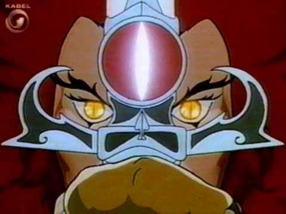

Αρχείο · Επικοινωνία της Επιστήμης
Γιατί το σχήμα της κόρης διαφέρει σε κάποια ζώα;
Πώς το σχήμα της κόρης και η θέση των ματιών συνδέονται με διαφορετικές οικολογικές ανάγκες θηρευτών και θηραμάτων.

Αρχικό κείμενο
Το ήξερες ότι το σχήμα της κόρης εξαρτάται από το αν είσαι θύτης ή θύμα;
Ζώα όπως τα άλογα και οι αντιλόπες έχουν οριζόντια κόρη και τα μάτια στα πλάγια ώστε να βλέπουν πανοραμικά. Αντίθετα οι γάτες, οι κροκοδειλοι και άλλα ζώα θηρευτές, έχουν κάθετη ή στρογγυλή κόρη και τα μάτια μπροστά ή πιο κοντά, ώστε να υπολογίζουν το βάθος, που βοηθά σημαντικά στο κυνήγι.
Fun fact: όταν τα ζώα βόσκουν, σκύβουν το κεφάλι και η οριζόντια κόρη χάνει την χρησιμότητά της. Για να το αποφύγουν αυτό τα ζώα με οριζόντια κόρη μετακινούν το μάτι τους μέσα στο κεφάλι τους ώστε να μένει πάντα στη σωστή θέση.